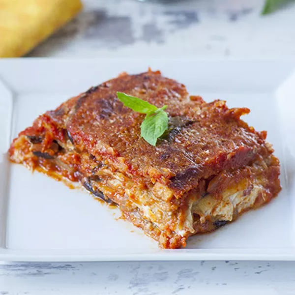

Eggplant Parmigiana

Description
Eggplant Parmigiana is one of the most popular and iconic vegetarian Italian dishes.
It is made with fried eggplant slices, tomato passata, several kinds of cheese, and fresh basil leaves.
Ingredients
- 3 eggplants
- coarse salt as needed
- 5 cups of vegetal oil for frying
- flour for dredging
- half a bottle of tomato passata
- 3 cloves garlic, halved
- a half onion, finely chopped
- fresh basil leaves
- 500g sliced cheese (mozzarella, scamorza)
- freshly grated Parmigiano Reggiano as needed
Steps
- Place a single layer of eggplant slices in a colander sitting on a plate and sprinkle with coarse salt.
Cover with a second layer and sprinkle with salt. Repeat with remaining eggplant.
Place a plate on top and add a weight to put pressure on the eggplant slices.
Let stand at room temperature for about 1 hour.
- Rinse eggplant slices under running cold water to wash off all the salt.
Pat dry on all sides with paper towels.
- Heat oil in a deep skillet over medium-high heat.
Dredge eggplant slices in flour on both sides and add to the hot oil, working in batches.
Deep fry eggplant until golden, 2 to 3 minutes per side. Drain on paper towels.
- Heat olive oil in a large pot over medium heat; cook garlic and onion until soft and translucent, about 5 minutes.
Add tomato puree, 4 basil leaves, and salt. Cook, stirring often, until sauce starts to thicken, about 20 minutes.
Remove sauce from heat. Discard garlic and stir in remaining 4 leaves basil.
- Preheat oven to 350 degrees F (175 degrees C).
- Spread a layer of tomato sauce over the bottom of a baking dish. Cover with a single layer of eggplant slices.
Top with more sauce, mozzarella slices, and Parmesan cheese.
Continue making layers, a total of 3 to 5, finishing with tomato sauce and grated Parmesan cheese.
- Bake in the preheated oven until heated through and bubbling, 30 to 40 minutes.
Remove from oven and let stand for 20 minutes before serving.
Home